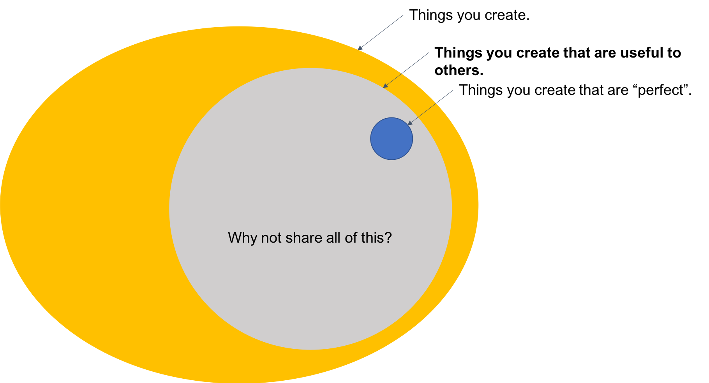

Share Your Work Online
Building a basic website is an important skill for the entrepreneur, employee, and citizen of the Internet. Using these skills to share your work online has benefits to you and others that justify the costs in time and effort required to do so. And sharing from your own domain gives you control over your data and teaches you about how the internet works.
My time spent "learning in public" so far has taught me a lot and also helped out some other like-minded strangers on the internet.1 I hope to share how you can experience this as well.
Why to Share Online
Benefits to You
Sharing your work online brings benefits that can't be had working in seclusion.
Learning
The single most important reason to share your work online is for the personal learning it enables. Sharing publicly can be uncomfortable but the additional pressure can help you learn with a rigor that would otherwise be lacking if it was just for yourself.
Sharing is a risk in that others may ignore you or even ridicule you. Polishing your ideas enough to share online is often the final step needed to solidify your understanding of a topic. Also, hearing people point out your mistakes might not be fun but it is a quick way to find and correct them.
They say that teaching is the best way to learn. On the Internet your students are people who find what you share to be useful or interesting (as well as your future self, who very well may thank you for taking the time to write up your findings).
Even if you have already gone through the work of developing an idea or program or other finished product, explaining it helps cement your knowledge: "The act of transforming ideas into words is an amazingly efficient way to solidify and refine your thoughts about a given topic."2
Plus, it freezes the topic while it is fresh in your mind for your later self to revisit and relearn from. Notes to a future self are often reason enough to write something down in the first place.
The learning in writing these blog posts was immense. While these blog posts are public, I think I am the biggest beneficiary. Not only does one gain a good understanding of the concept involved, but one also gains confidence about the subject and one's ability to understand! The key lesson is to document your learnings, understandings, and try to abstract out your specific problem and think of teaching the concept to someone who doesn't know much about your problem.
–Nipun Batra3
Build a Body of Work
Sharing your work is the first step in building a meaningful body of work. You will be able to take pride in pointing to something you created, and it might open other opportunities for you as well.
A typical knowledge worker may not as naturally create this body of work as an academic, artist, or craftsman for instance. Taking the time to fashion your more nebulous contributions into tangible pieces of work that can be published is a way to ensure your work accumulates over time rather than simply being lost to time.
Building anything worthwhile takes time and energy. More than actively pursuing a goal, sharing online should come from a mindset of always improving. What you write up and share may be the first tentative steps of something bigger that won't materialize for quite some time. I like the story of how during World War I Winston Churchill "carefully filed memoranda, documents, and letters" away for inclusion in his memoirs.4 He went on to write The World Crisis, a 6-volume history of the war that secured his family's livelihood for many years. What could have been lost was instead built up in small pieces as events happened and later assembled into a meaningful final product.
Little pieces of effort and examples of work add up over time. A little bit each day is great. A little each week adds up quickly: "If you do one little thing each week, imagine how much you can learn in a year."5 Even at a monthly cadence you can build a solid foundation over a few years’ time, and a lot of the blogs I have learned from average maybe 12 posts per year, or one per month. With patience and a long horizon, every little bit counts: "One little blog post is nothing on its own, but publish a thousand blog posts over a decade, and it turns into your life's work."6
Practical benefits may come from this (job offers, friendships, etc.), but the intrinsic benefits will suffice. This body of work is a journal of your intellectual development, an online repository of knowledge for future reference, and something you can point to with satisfaction and say, "I made that."
Feedback
The feedback I have received from the relatively little I have published online has already been helpful. The reality of the internet is that it shrinks the world making geographic proximity irrelevant in finding and conversing with people who share similar interests.
Rude feedback can be ignored, but even negative feedback will help you if received in the right frame of mind. There's no quicker way to learn than by having others point out your mistakes.
Business
It goes without saying that if you want to build a business in today's world an online presence is required for all but the rarest exceptions. You need a way to reach customers, accept payments, respond to questions, and build a network. A website need not be complex and expensive (or built by a professional) to meet these basic needs.
Not Recognition
You'll notice that recognition or fame isn't on this list, though an honest self-examination by any author will probably reveal some desire for accolades. This is a poor reason to share online. Simple math says that your chances of achieving fame are not high, and I'll wager that the majority of what people post online languishes in obscurity. Plus, you might not even want what you're looking for: "When you find yourself pining for fame and recognition, stop and consider what it might actually feel like when you get it—why you think you’ll be the exception to the rule and will find happiness in what nearly everyone else in history has found to be a chimera."7
Sharing online can clearly benefit you a lot. The best part about sharing online is that it benefits other too.
Benefits to Others
A lot of what I know—apart from what I have read in books—I learned from what other people have shared online. Since you're reading this you probably have as well. Sharing some of your knowledge online is the best way to pay it forward to others.
One challenge to overcome is the desire to only share what is perfect. But much of what you produce will be useful to others long before it is perfect.

Granted you won't know what may be useful to someone else, but if you have put any amount of time into learning something you are probably underestimating rather than overestimating how useful it could be.
Just remember that it must be shared on the internet to ever be useful to someone else. Remember that "things that are still on your computer are approximately useless." What you produce cannot help other people if it exists only in your head, in a notebook, or on your computer.8
Share From Your Own Domain
Data—or "content"—is an increasingly valuable commodity in our information economy. Media platforms effectively exchange this user-generated data for user attention, which they can then sell to advertisers. By sharing your thoughts and ideas on these platforms you are contributing to the enrichment of the platform owners as well as a host of negative outcomes for the users of the platforms.9
What results is a form of "digital feudalism" in which we cultivate the platforms for the benefit of the platform owners rather than for ourselves.10 Publishing on your own domain is the way to step out of this paradigm. Limit your use of Facebook and Twitter to posting links to the work you publish on the platform you control.11
It will take effort to climb the walls keeping us trapped in these feudal digital estates, both the technical effort to set up a domain and maintain a website, as well as the psychological courage to leave the popular places of online congregation. But doing so furthers the “re-decentralize” the web and the empowerment of individuals rather than platform owners exclusively.12
Conquering the technical hurdles and sharing from your own domain also builds your knowledge of how the internet functions, allowing you to "think about how these technologies shape the formation of [your] understanding of the world".13 Alan Jacobs suggests some of the skills citizens of the internet need to achieve this vision:
I think every young person who regularly uses a computer should learn the following:
- how to choose a domain name
- how to buy a domain
- how to choose a good domain name provider
- how to choose a good website-hosting service
- how to find a good free text editor
- how to transfer files to and from a server
- how to write basic HTML, including links to CSS (Cascading Style Sheet) files
- how to find free CSS templates
- how to fiddle around in those templates to adjust them to your satisfaction
- how to do basic photograph editing
- how to cite your sources and link to the originals
- how to use social media to share what you’ve created on your own turf rather than create within a walled factory
One could add considerably to this list, but these, I believe, are the rudimentary skills that should be possessed by anyone who wants to be a responsible citizen of the open Web—and not to be confined to living on the bounty of the digital headmasters.14
Multiple of these points stress the importance of sharing from your own domain. For the others, you might find my GitHub Pages Example helpful for learning the basics. Whatever specific technologies you choose, sharing from your domain rather than on a platform owned by someone grants you the most control in your online publishing.
Closing Thoughts
A popular opinion among those promoting STEM education is that everyone should learn to code. Certainly not everyone needs to know "how to code" to be successful. But the internet would certainly be a place of more learning if more people who use it actively shared their work from their own domain. They would learn, others would learn from them, and we would return closer to the original vision of the internet.15
Update 2020-11-11
I came across this relevant post and presentation from Tom Critchlow.
-
Nadia Eghbal, “The independent researcher,” Nadia Eghbal's Blog, June 27, 2018,
https://nadiaeghbal.com/independent-research. ↩ -
Tom Preston-Werner, “Blogging Like a Hacker,” Tom Preston-Werner's Blog, November 11, 2008,
http://tom.preston-werner.com/2008/11/17/blogging-like-a-hacker.html. ↩ -
Nipun Batra, “CS Ph.D. lessons to my younger self,” Nipun Batra's Blog, January 7, 2018,
https://nipunbatra.github.io/blog/2018/cs-phd-lessons.html. ↩ -
William Mancheseter, The Last Lion: Winston Spencer Churchill: Visions of Glory, 1874-1932 (New York: Little, Brown, and Company, 1983), 767. Full quote: "carefully filed memoranda, documents, and letters, explaining, in a letter to Clementine on July 17, 1915, 'Someday I should like the truth to be known.'" ↩
-
Derya Little, From Islam to Christ (San Francisco: Ignatius, 2017), 201. ↩
-
Austin Kleon, Show Your Work! (New York: Workman, 2014), 66-67. Full quote: "One little blog post is nothing on its own, but publish a thousand blog posts over a decade, and it turns into your life's work. My blog has been my sketchbook, my studio, my gallery, my storefront, and my salon. Absolutely everything good that has happened in my career can be traced back to my blog. My books, my art shows, my speaking gigs, some of my best friendships—they all exist because I have my own little piece of turf on the Internet." ↩
-
Ryan Holiday, “The Most Successful People Are The Ones You’ve Never Heard Of (And Why They Want It That Way),” Thought Catalog, March 20, 2018,
https://thoughtcatalog.com/ryan-holiday/2018/03/the-most-successful-people-are-the-ones-youve-never-heard-of-and-why-they-want-it-that-way/. ↩ -
I came across this tweet here: David Robinson, “Advice to aspiring data scientists: start a blog,” Variance Explained, November 14, 2017,"Things that are still on your computer are approximately useless." -@drob #eUSR #eUSR2017 pic.twitter.com/nS3IBiRHBn
— Amelia McNamara (@AmeliaMN) November 3, 2017http://varianceexplained.org/r/start-blog/. ↩ -
See Cal Newport's Digital Minimalism for more about this phenomenon and how to now be a victim of the "attention economy", c.f. this quote that references The Attention Merchants by Tim Wu "Extracting eyeball minutes, the key resource for companies like Google and Facebook, has become significantly more lucrative than extracting oil" (216). ↩
-
"Anthony DeRosa, a product manager at Reuters, has likened the present age to a 'digital feudalism'. Amateur entertainment creators are so seduced by sites like Facebook, Twitter, or YouTube that they put their own time, energy, and money into creating engaging content that benefits someone else—the media platforms—more than themselves. Like serfs during the Middle Ages, these creators don't own the 'land' on which they reside; rather, it is 'owned by someone else, be it Facebook or Twitter or Tumblr.'" from Nicco Mele, The End of Big (New York: St. Martin's, 2013), 120. His footnote cites this NYT article: At Media Companies, a Nation of Serfs ↩
-
Audrey Watters, “Why 'A Domain of One's Own' Matters (For the Future of Knowledge),” Hack Education, April 4, 2017,
http://hackeducation.com/2017/04/04/domains. ↩ -
Dan Cohen, “Back to the Blog,” Dan Cohen's Blog, March 21, 2018,
https://dancohen.org/2018/03/21/back-to-the-blog/. ↩ -
Audrey Watters, “Why 'A Domain of One's Own' Matters (For the Future of Knowledge),” Hack Education, April 4, 2017,
http://hackeducation.com/2017/04/04/domains. ↩ -
Alan Jacobs. "Tending the Digital Commons: A Small Ethics toward the Future." The Hedgehog Review Vol. 20, No. 1 (2018): The Hedgehog Review. Web. 28 Mar. 2018. ↩
-
The web, as envisioned by its inventor Sir Tim Berners-Lee, exists to enable "human communication, commerce, and opportunities to share knowledge." —World Wide Web Consortium (W3C) Mission ↩